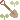

this website is under construction!please mind your feet around the broken links.

“Resistance to Text-to-Image Generators in Creator Communities”. Peters, J., Kuh, B., Li, I. UC Berkeley Center for Long-Term Cybersecurity White Paper Series 2024.
Text-to-image generators like DALL-E have sparked controversy among artistic creators, who are concerned about how generative artificial intelligence (Gen AI) models have been trained with copyright-protected materials. A new white paper from the UC Berkeley Center for Long-Term Cybersecurity presents findings from a survey of creative professionals “who have resisted the integration of text-to-image generators in their creative practice, with a summary of their mechanisms and aims for resistance.”